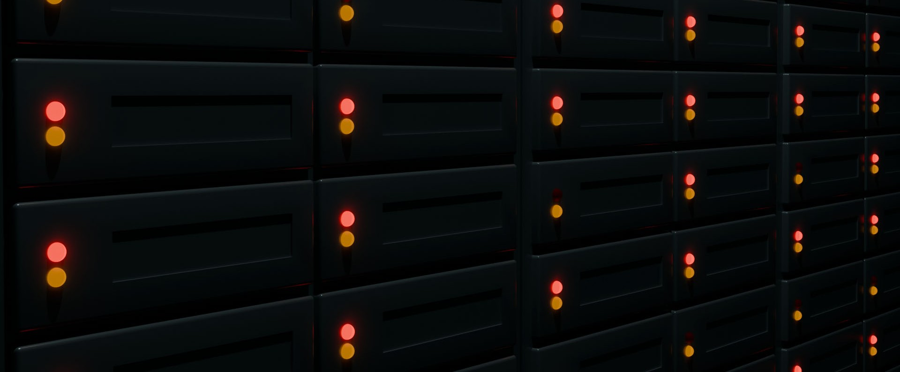
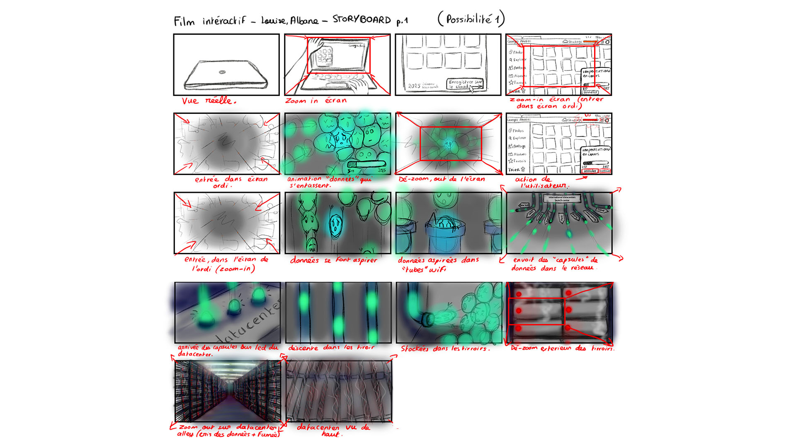
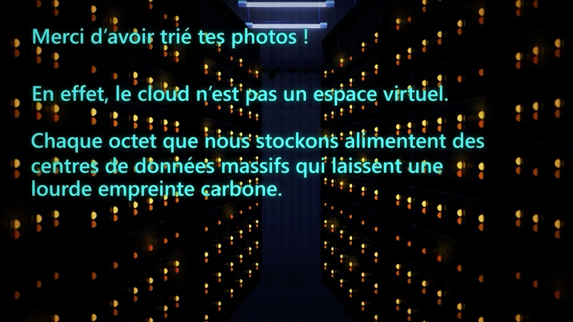
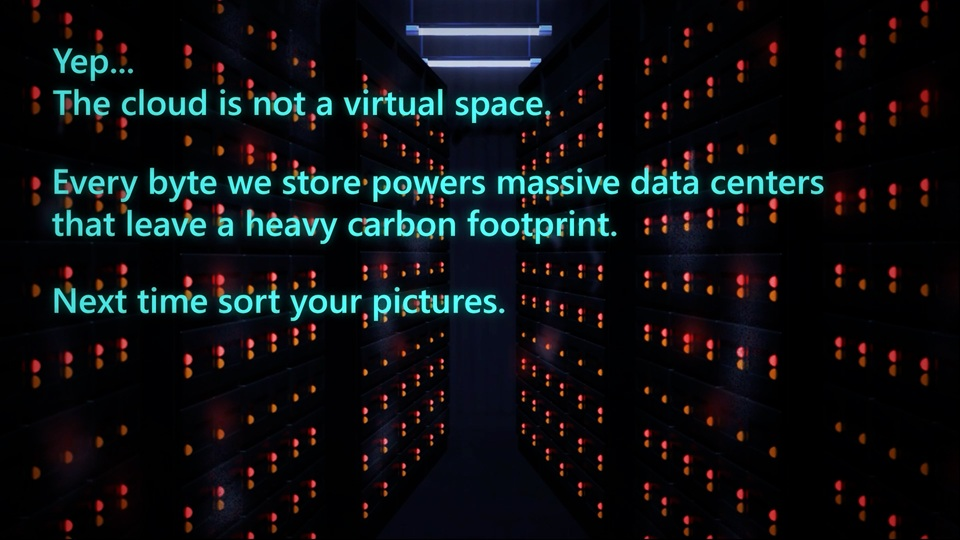

What if we sorted our data?
Octobre 2024
Un film interactif qui rend visible la pollution numérique du cloud et interroge nos gestes de tri de données.
What if we sorted our data? est un court film interactif réalisé en collaboration avec Albane Heitz.
Ce projet interroge le stockage massif des données dans le cloud et dans les centres de données, ainsi que la pollution numérique invisible générée par ces infrastructures souvent perçues comme immatérielles.
À travers une approche animée et interactive, le film rend tangible cette “pollution du cloud” en donnant à voir l’accumulation, la circulation et la matérialité des données. Développée avec Processing, l’expérience propose une narration à choix : le spectateur peut décider de “trier les photos” ou non, activant ainsi deux scénarios possibles. Ce dispositif met en tension notre rapport aux gestes numériques quotidiens et leurs conséquences écologiques, dans une expérience à la fois pédagogique et sensible.


